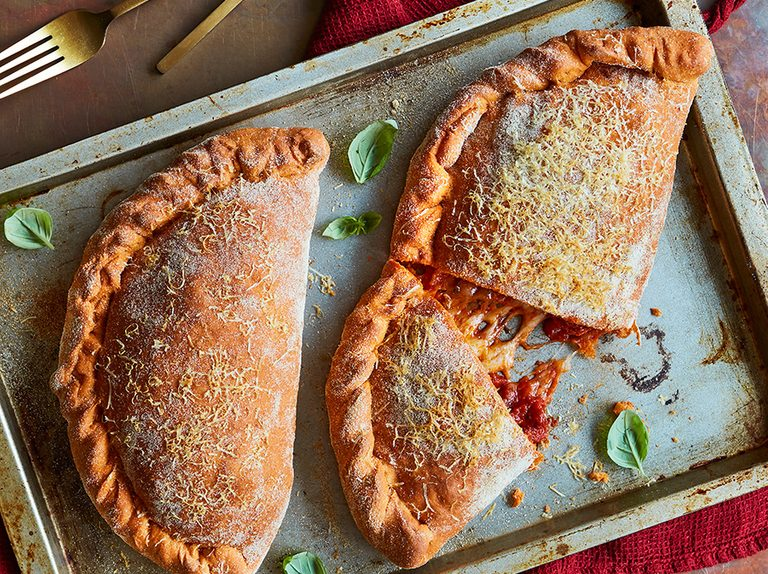

Calzone

Description
This calzone pizza dough will be ready in a snap!
It will be a great meal to cook for kids and adults of all ages. Enjoy the recipe and cooking experience!
Ingredients:
- ½ cup lukewarm water
- 1(.25 ounce)package active
- ½ cup of water
- 2 tablespoons of olive oil
- 2 tablespoons honey
- ½ teaspoon of salt
- 3 cups of all-purpose flour, plus more for dusting
Steps:
- Mix together 1/2 cup lukewarm water and yeast in a small bowl.
Let stand until foamy, about 5 minutes
- Combine 1/2 cup water, olive oil, honey, and salt in a large mixing bowl. Add 1 cup flour and mix well. Mix yeast mixture into flour mixture.
Add remaining flour, 1 cup at a time, until dough is well combined.
- Knead dough on a floured work surface until dough is soft, smooth, and elastic, about 8 minutes.
Roll dough into 4 calzone shapes or 1 large pizza.